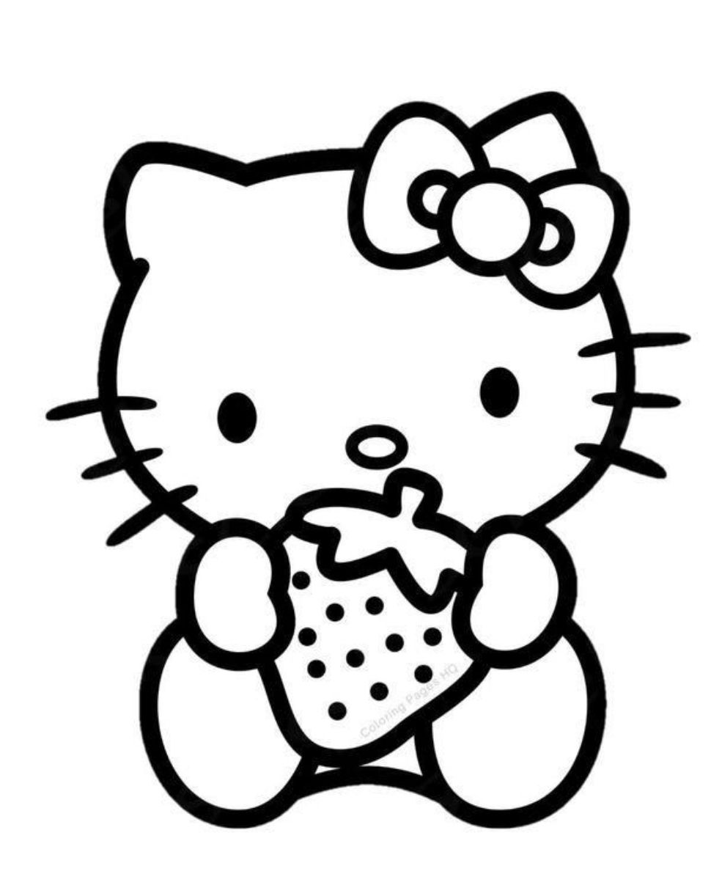
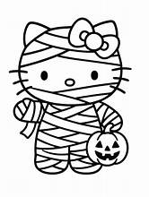
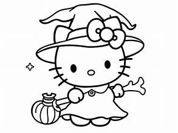
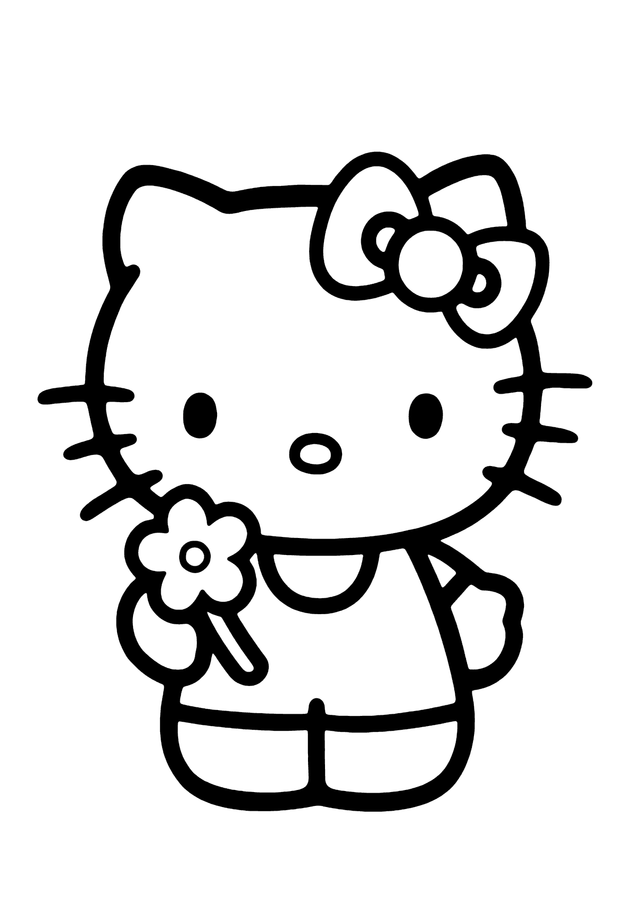

Sobre Hello Kitty
Hello Kitty es un personaje ficticio creado por la compañía japonesa Sanrio en 1974. Es una gatita blanca con un lazo rosa/red en una oreja y se ha convertido en un ícono global de la cultura kawaii. ¡A los fans les encanta su imagen dulce y versátil para productos, moda y arte!
Galería de imágenes




Contacto
¿Quieres compartir tu amor por Hello Kitty? Escríbenos a: hellokittyfans@example.com